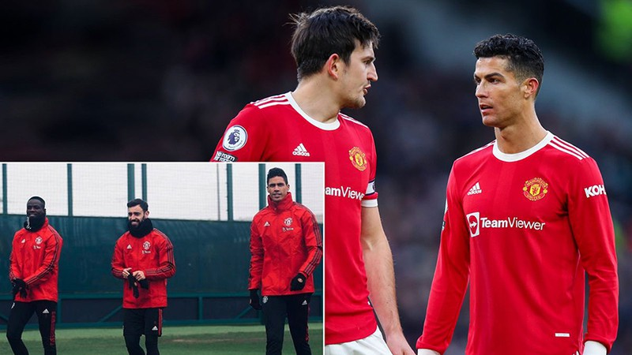
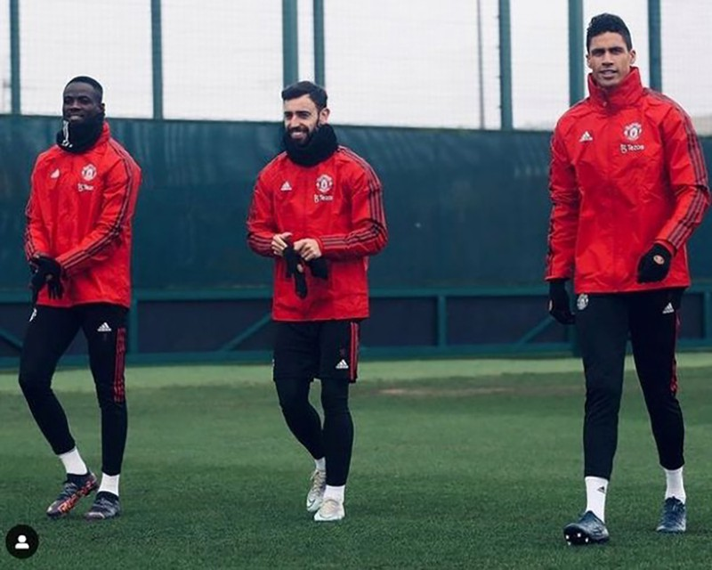
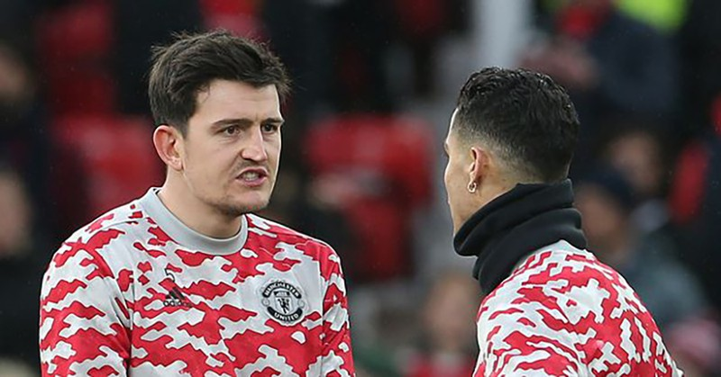

Bruno Fernandes đổ dầu vào lửa trong cuộc chiến quyền lực ở MU
Chỉ một câu bình luận của Bruno Fernandes trên mạng xã hội cũng thổi bùng lên những tranh cãi về cuộc chiến quyền lực giữa Cristiano Ronaldo và Harry Maguire ở Manchester United.
Tiền vệ người Bồ Đào Nha đã lên mạng xã hội Instagram tung ra lời bình luận gây tranh cãi, sau thông tin Cristiano Ronaldo và Harry Maguire đang cạnh tranh chiếc băng đội trưởng Manchester United. Đó là dấu hiệu cho thấy tình trạng bất ổn mới trong phòng thay đồ đội chủ sân Old Trafford.
Tờ Mirror (Anh) tiết lộ trong bản tin độc quyền hôm thứ năm rằng, ngày càng có nhiều mâu thuẫn trong phòng thay đồ MU, với việc Ronaldo và Maguire bị lôi kéo vào cuộc tranh giành quyền lực với chiếc băng đội trưởng.
Theo đó, HLV Ralf Rangnick, Ronaldo và Maguire có buổi họp kín nhằm làm rõ chiếc băng đội trưởng ở “nhà hát của những giấc mơ”. Tại đây, Maguire phản đối ý định từ bỏ vai trò đội trưởng và trao nó lại cho người 5 lần giành Quả bóng vàng Ronaldo trong phần còn lại của mùa giải.  Maguire sợ sẽ mất băng đội trưởng MU vĩnh viễn chứ không đòi lại được nữa sau khi mùa này kết thúc. Trong khi đó, HLV Rangnick lại kêu gọi Ronaldo lãnh đạo và chăm sóc các ngôi sao trẻ “quỷ đỏ”. Điều này được cho là dẫn đến xích mích với Maguire, bởi với tư cách đội trưởng, lẽ ra chính Maguire mới là người phải lãnh đạo phòng thay đồ MU.
Một nguồn tin từ nội bộ MU cho biết: “Ban đầu, Ronaldo đã yêu cầu các cầu thủ MU ủng hộ Harry Maguire. Nhưng vấn đề bây giờ là HLV trưởng muốn Ronaldo kèm cặp tất cả những cầu thủ trẻ hơn.
Đó là điều khiến Maguire không còn giữ vai trò lãnh đạo, trong khi anh ấy là đội trưởng mà bây giờ phải làm theo bất cứ những gì Ronaldo nói để giữ sự “ngọt ngào” trong đội”.
Bây giờ, người đồng hương người Bồ Đào Nha của Ronaldo là Bruno Fernandes lại đăng tải bức ảnh anh đứng giữa hai trung vệ Eric Bailly và Raphael Varane lên Instagram kèm chú thích làm dậy sóng dư luận: “Cảm thấy rất an toàn giữa hai người này”.  Maguire chơi ở vị trí trung vệ và là đội trưởng MU. Nhiều người hâm mộ lên mạng xã hội bình luận rằng, câu nói của Bruno dường như cho thấy anh thích Bailly và Varane đá cặp trung vệ hơn là đội trưởng Maguire.
Maguire gần đây rớt phong độ thê thảm dẫn đến chiếc băng trưởng của anh bị nghi ngờ. Thông điệp của Bruno Fernandes gợi ý thêm về sự hỗn loạn trong phòng thay đồ MU với việc Maguire cảm thấy bị thiệt thòi và giảm sút tầm ảnh hưởng với các cầu thủ. Trước đó, còn có thông tin nhóm cầu thủ nói tiếng Bồ Đào Nha do Bruno và Ronaldo dẫn đầu có mâu thuẫn với nhóm các cầu thủ bản địa người Anh.
Và bây giờ, lời nói của Bruno Fernandes giữa lúc Ronaldo và Maguire được cho là cạnh tranh quyền lực được hiểu là “một phát súng tinh vi của Bruno Fernandes nhắm thẳng vào Maguire”.
Khi trở lại Old Trafford sau 12 năm xa cách vào mùa hè năm ngoái, Ronaldo ngay lập tức thúc giục các đồng đội đoàn kết đứng sau lưng Maguire. Khi MU gặp khó khăn với phong độ tệ hại trên sân cỏ, siêu sao 37 tuổi người Bồ Đào Nha tiếp tục thể hiện thông điệp kêu gọi sự đoàn kết. Tuy nhiên, trong những tuần gần đây, sự ủng hộ của Ronaldo cho Maguire đã giảm sút.
Trước đó, truyền thông Anh cho rằng Marcus Rashford và Harry Maguire khó chịu và không hài lòng khi Ronaldo muốn tạo ảnh hưởng và quyền lực trong phòng thay đồ đội chủ sân Old Trafford.
Tuy nhiên, Rashford đã đăng đàn phủ nhận thông tin này. Rashford viết trên mạng xã hội: “Chúng ta chỉ làm việc và đi cùng nhau bây giờ. Xin hãy ngừng tìm kiếm sự chia rẽ”.
 Với hàng loạt thông tin về sự rạn nứt trong phòng thay đồ Manchester United, nếu nó là sự thật thì sẽ ảnh hưởng lớn đến triều đại ngắn ngủi của Ralf Rangnick cũng như hi vọng giành suất dự Champions League mùa tới của đội chủ sân Old Trafford.